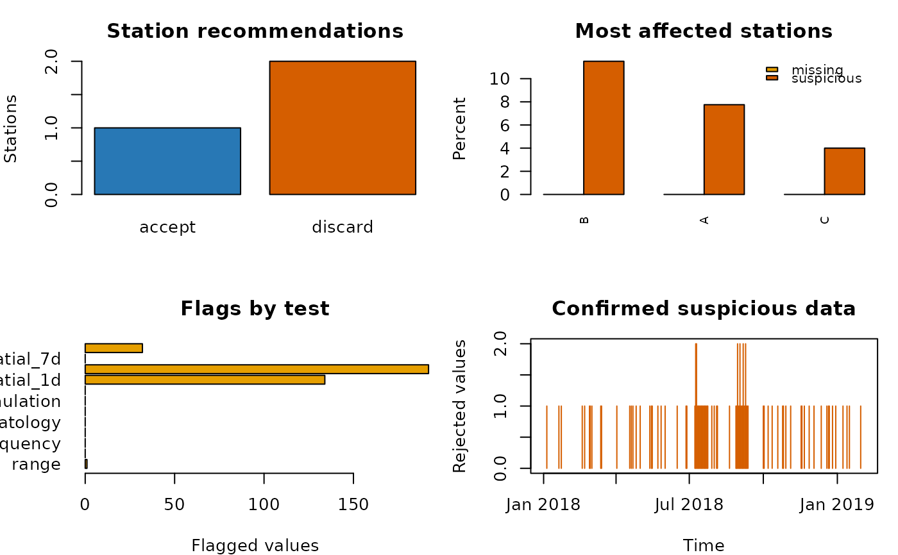

Quality control of daily precipitation time series
precipQC_daily.RdApplies a conservative, multi-test quality-control workflow to one or more
daily precipitation series in a zoo object. Individual observations are
flagged for review or rejection, stations are recommended for acceptance or
discarding, and no files are written.
Usage
precipQC_daily(
x, metadata=NULL, station.id="station", coords=c("lon", "lat"),
checks=c(range=TRUE, duplicate=TRUE, frequency=TRUE, gap=TRUE,
climatology=TRUE, persistence=TRUE, accumulation=TRUE,
weekday=TRUE, spatial=TRUE, dryspell=TRUE, breakpoint=TRUE),
lower=0, upper=1825, wet.threshold=0.1,
duplicate.min.month=20L, duplicate.min.year=300L,
duplicate.min.nonzero=3L,
frequency.window=10L, frequency.min.samples=20L,
gap.threshold=300, gap.min.samples=30L,
climatology.window=15L, climatology.prob=0.999,
climatology.z=8, climatology.min.samples=30L,
persistence.threshold=10, persistence.run=5L,
weekday.min.wet=20L, weekday.alpha=0.001,
weekday.ratio=0.5,
spatial.days=c(1L, 3L, 7L), spatial.cr=3,
n.neighbours=10L, max.distance=400, min.neighbours=2L,
min.overlap=30L, min.correlation=0,
dryspell.days=15L, neighbour.wet.days=3L,
neighbour.fraction=1,
correction=c("none", "set_na", "spatial"),
min.evidence=2L, max.missing=0.2, max.suspicious=0.05,
min.years=1, discard.breakpoint=FALSE,
elevation=NULL, elevation.scale=500
)Arguments
- x
A
zooobject with a dailyDateorPOSIXtindex. Each column is one precipitation station and must have a unique name. Values are assumed to be precipitation depths in mm per day.- metadata
NULL, or a data.frame with one row per station. Extra columns are preserved in the accepted and discarded metadata outputs. When supplied, it must contain the identifier, longitude, and latitude fields selected bystation.idandcoords. Rows may be in any order and extra stations are allowed. WhenNULL, spatial tests retain the correlation-only behaviour and generated station metadata are returned.- station.id
Character string naming the metadata column that contains the column names of
x.- coords
Two character strings naming longitude and latitude columns in
metadata, in that order. Both columns must be numeric, finite, and expressed in decimal degrees.- elevation
NULL, or a character string naming an optional numeric metadata column of station elevations in metres. It is used only when explicitly selected.- elevation.scale
Positive elevation-decay scale in metres. With elevation metadata, candidate neighbours and their spatial weights are penalized by
exp(-abs(dz) / elevation.scale). A smaller value gives elevation difference more influence. The argument has no effect whenelevation=NULL.- checks
Named logical vector. Any subset of
"range","climatology","duplicate","frequency","gap","persistence","accumulation","weekday","spatial","dryspell", and"breakpoint"can be supplied to override the default of running every check.- duplicate.min.month, duplicate.min.year, duplicate.min.nonzero
Minimum complete paired month positions, complete paired year positions, and non-zero totals in both blocks for copied-block detection.
- frequency.window, frequency.min.samples
Number of consecutive non-zero reports examined for clustered identical values and minimum calendar-month wet sample used for their percentile screen.
- gap.threshold, gap.min.samples
Minimum adjacent separation in a sorted calendar-month wet distribution and minimum wet sample required for that check.
- lower, upper
Physical lower and upper limits, in mm/day. The default upper limit is the historical 24-hour world record used by Hamada et al. (2011). Regional limits should be supplied when authoritative values are available.
- wet.threshold
Depth in mm separating dry and wet observations.
- climatology.window
Odd or even positive integer giving the width, in calendar days, of the moving day-of-year climatological window.
- climatology.prob
Upper empirical probability used by the climatological test.
- climatology.z
Number of robust standard deviations above the median on the
log1p-transformed scale.- climatology.min.samples
Minimum number of observations needed to estimate a climatological limit.
- persistence.threshold
Minimum repeated non-zero value, in mm/day, to which
persistence.runis applied.- persistence.run
Minimum run length for repeated values at or above
persistence.threshold. The paper-based default flags five or more identical values of at least 10 mm/day.- weekday.min.wet
Minimum number of wet days required in a station-year before the weekday false-zero test is attempted.
- weekday.alpha
Significance level for the exposure-adjusted chi-squared comparison of wet-day occurrence among the seven weekdays.
- weekday.ratio
Maximum ratio of observed to expected wet days used to identify an under-recorded weekday after the overall weekday test is significant. It must be in
(0, 1).- spatial.days
Positive integers giving the rolling accumulation durations, in days, at which spatial consistency is tested. A flag at an accumulated endpoint is expanded to every contributing daily value.
- spatial.cr
Critical ratio for transformed observed-minus-neighbour-estimate residuals. The default follows the initial value used by El Hachem et al. (2022).
- n.neighbours
Maximum number of neighbours used for each target station.
- max.distance
Maximum station-neighbour distance in km when coordinates are available.
- min.neighbours
Minimum number of simultaneous valid neighbours needed for a spatial estimate.
- min.overlap
Minimum number of paired observations required when selecting neighbours.
- min.correlation
Minimum Spearman correlation preferred when selecting neighbours. When too few preferred neighbours remain, the best eligible neighbours are used.
- dryspell.days
Length of a target-station dry window to compare with neighbours.
- neighbour.wet.days
Number of wet days a neighbour must have during a target-station dry window.
- neighbour.fraction
Fraction of available neighbours that must corroborate a suspicious dry window. It must be in
(0, 1].- correction
Correction policy.
"none"(the default) preserves all observations;"set_na"replaces confirmed suspicious observations byNA;"spatial"uses the native-scale spatial estimate when available andNAotherwise.- min.evidence
Number of independent non-hard flags required to reject an observation. Range, copied-block, clustered frequent-value, distribution-gap, persistence, accumulated-total, and spatially corroborated dry-spell flags are treated as hard evidence. A value with less evidence remains in the
suspicioustable with action"review".- max.missing
Maximum missing fraction allowed for a station recommendation of
"accept". Missing timestamps inside the record span are included.- max.suspicious
Maximum fraction of confirmed suspicious observations allowed for a station recommendation of
"accept".- min.years
Minimum record length in years required for a station recommendation of
"accept". The default is intended for general QC; analyses of extremes usually require substantially longer records.- discard.breakpoint
Logical. If
TRUE, a large significant breakpoint also causes a station recommendation of"discard". It isFALSEby default because an apparent change may be climatic rather than instrumental.
Details
The workflow combines tests that address different error mechanisms instead of treating one statistical anomaly as proof of error.
Physical range: negative depths and values above a defensible record limit are impossible or require review. Record limits are screening limits, not estimates of local return levels. This is the gross-error stage used by Hamada et al. (2011) and Estevez et al. (2022).
Climatological plausibility: precipitation is transformed with
log1pto reduce positive skew. Within a moving 15-day calendar window, an upper limit combines an empirical quantile with a robust median/MAD limit. The largest exceedance is removed iteratively before the limit is recomputed. This is a robust adaptation of the calendar-window outlier test of Hamada et al. (2011), consistent with the robust and month-aware limits discussed by Stepanek et al. (2009), Estevez et al. (2022), and Golkhatmi and Farzandi (2024).Persistence: identical non-zero values repeated for several days may indicate a stuck sensor, copied record, or truncated measurement. The defaults reproduce the daily criterion in Hamada et al. (2011), while Vicente-Serrano et al. (2010) and Estevez et al. (2022) independently use repeated-value screening in daily databases.
Copied blocks, clustered identical values, and distribution gaps: complete identical years or months, tiered frequent identical values among ten non-zero reports, and a wet-distribution tail separated by at least 300 mm are flagged as hard recording-integrity evidence. These tests reproduce the daily precipitation duplicate, frequent-value, and gap checks of Durre et al. (2010), with explicit minimum samples to avoid declaring sparse blocks identical.
Accumulated totals: a large value immediately after missing days is flagged as a possible multi-day accumulation. Automatic redistribution is not attempted because the period and total must be known reliably. Scherrer et al. (2011) redistributed known accumulated totals proportionally to spatial estimates.
Systematic weekday false zeros: within each station-year, the distribution of wet days is compared with the weekday exposure. If the distribution is highly inconsistent and a weekday records at most the requested fraction of its expected wet days, dry values on that weekday are flagged for review. This operationalizes the weekday-zero quality component of Estevez et al. (2022), with exposure adjustment to avoid mistaking uneven missingness for under-recording.
Multi-scale spatial consistency: each station is removed in turn, its transformed precipitation is estimated from up to ten nearby stations, and the residual is standardized by local and historical robust dispersion. The test is repeated for 1-, 3-, and 7-day rolling totals by default. Geographic distance limits the candidate set. If elevation is supplied, height similarity also affects neighbour ranking and the inverse-distance weights, which avoids treating a nearby station across a large orographic contrast as equally representative. This combines the neighbour logic of Scherrer et al. (2011) with the multi-aggregation critical-ratio idea of El Hachem et al. (2022). Relative candidate/reference comparisons are also supported by Stepanek et al. (2009) and Vicente-Serrano et al. (2010).
Spatially corroborated dry spells: a long target-station dry period is flagged only when the selected neighbours repeatedly record wet days, adapting the GSDR-QC dry-neighbour rule of Lewis et al. (2021) and the suspect-zero comparisons of Vicente-Serrano et al. (2010) and Golkhatmi and Farzandi (2024).
Homogeneity: Pettitt rank tests are applied to sufficiently complete annual precipitation totals, wet-day counts, maxima, and counts above the station's wet-day 99th percentile. P-values are Holm-adjusted and the strongest diagnostic is reported. The multi-indicator design follows Vicente-Serrano et al. (2010); the cautious interpretation and use of multiple evidence follows Stepanek et al. (2009). The breakpoint is diagnostic by default because station moves, equipment changes, and true climatic changes can produce similar signals.
Convective precipitation can be genuinely local. Therefore a spatial flag by
itself is labelled for review, and default correction is disabled. Confirmed
rejection requires either a hard physical/recording test or at least
min.evidence coincident flags.
Value
An object of class "precipQC", which is a list containing:
accepted.metadataanddiscarded.metadata: station metadata plus QC diagnostics and the recommendation reason;accepted.data: unmodified daily series for accepted stations;accepted.corrected: accepted-station series after the requested correction policy;suspicious: one row per flagged station-time value, including the tests, evidence count, action, spatial estimate, and correction;corrections: an audit table of changed values;flags: named logicalzooobjects returned by the individual tests;flag.count,rejected,station.summary,breakpoint, spatial diagnostics, neighbours, and settings.
References
Durre, I., Menne, M. J., Gleason, B. E., Houston, T. G. and Vose, R. S. (2010). Comprehensive automated quality assurance of daily surface observations. Journal of Applied Meteorology and Climatology, 49, 1615–1633.
Hamada, A., Arakawa, O. and Yatagai, A. (2011). An automated quality control method for daily rain-gauge data. Global Environmental Research, 15, 183–192.
Scherrer, S. C., Begert, M., Croci-Maspoli, M. and Appenzeller, C. (2011). Operational quality control of daily precipitation using spatio-climatological plausibility testing. Meteorologische Zeitschrift, 20, 397–407.
El Hachem, A. et al. (2022). Space-time statistical quality control of extreme precipitation observations. Hydrology and Earth System Sciences, 26, 6137–6146.
Lewis, E. et al. (2021). Quality control of a global hourly rainfall dataset. Environmental Modelling and Software, 144, 105169.
Stepanek, P., Zahradnicek, P. and Skalak, P. (2009). Data quality control and homogenization of air temperature and precipitation series in the area of the Czech Republic in the period 1961–2007. Advances in Science and Research, 3, 23–26.
Vicente-Serrano, S. M., Begueria, S., Lopez-Moreno, J. I., Garcia-Vera, M. A. and Stepanek, P. (2010). A complete daily precipitation database for northeast Spain: reconstruction, quality control, and homogeneity. International Journal of Climatology, 30, 1146–1163.
Estevez, J., Llabres-Brustenga, A., Casas-Castillo, M. C., Garcia-Marin, A. P., Kirchner, R. and Rodriguez-Sola, R. (2022). A quality control procedure for long-term series of daily precipitation data in a semiarid environment. Theoretical and Applied Climatology, 149, 1029–1041.
Golkhatmi, N. S. N. and Farzandi, M. (2024). Enhancing rainfall data consistency and completeness: a spatiotemporal quality control approach and missing data reconstruction using MICE on large precipitation datasets. Water Resources Management, 38, 815–833.
Serrano-Notivoli, R. and Tejedor, E. (2021). From rain to data: a review of the creation of monthly and daily station-based gridded precipitation datasets. WIREs Water, 8, e1555.
Author
Mauricio Zambrano-Bigiarini, mzb.devel@gmail.com
Examples
set.seed(1)
dates <- seq(as.Date("2018-01-01"), by="day", length.out=400)
values <- matrix(stats::rgamma(length(dates) * 3, 0.4, 1),
ncol=3)
values[values < 1] <- 0
values[20, 1] <- -1
colnames(values) <- c("A", "B", "C")
pcp <- zoo(values, dates)
meta <- data.frame(code=colnames(pcp),
longitude=c(-71.2, -71.1, -71.0),
latitude=c(-33.2, -33.1, -33.0),
altitude_m=c(100, 250, 400))
qc <- precipQC_daily(pcp, metadata=meta, station.id="code",
coords=c("longitude", "latitude"),
elevation="altitude_m", min.years=0,
checks=c(breakpoint=FALSE))
qc$station.summary
#> station expected observed missing.percent review.count review.percent
#> A A 400 400 0 117 0.2925
#> B B 400 400 0 111 0.2775
#> C C 400 400 0 71 0.1775
#> suspicious.count suspicious.percent breakpoint.year breakpoint.indicator
#> A 31 0.0775 NA <NA>
#> B 46 0.1150 NA <NA>
#> C 16 0.0400 NA <NA>
#> breakpoint.p.value breakpoint.relative.change breakpoint.n.indicators
#> A NA NA 0
#> B NA NA 0
#> C NA NA 0
#> breakpoint.flag record.years recommendation reason
#> A FALSE 1.09514 discard suspicious fraction exceeds limit
#> B FALSE 1.09514 discard suspicious fraction exceeds limit
#> C FALSE 1.09514 accept within acceptance limits
head(qc$suspicious)
#> time station original spatial.estimate spatial.score n.tests
#> 1 2018-01-03 A 0.000000 0 0.00000 1
#> 2 2018-01-04 A 0.000000 0 0.00000 1
#> 3 2018-01-05 A 3.763071 0 10.40595 2
#> 4 2018-01-06 A 0.000000 0 0.00000 1
#> 5 2018-01-07 A 0.000000 0 0.00000 1
#> 6 2018-01-20 A -1.000000 0 0.00000 1
#> tests action corrected correction
#> 1 spatial_3d review 0.000000 none
#> 2 spatial_3d review 0.000000 none
#> 3 spatial_1d, spatial_3d reject 3.763071 none
#> 4 spatial_3d review 0.000000 none
#> 5 spatial_3d review 0.000000 none
#> 6 range reject -1.000000 none
plot(qc)
